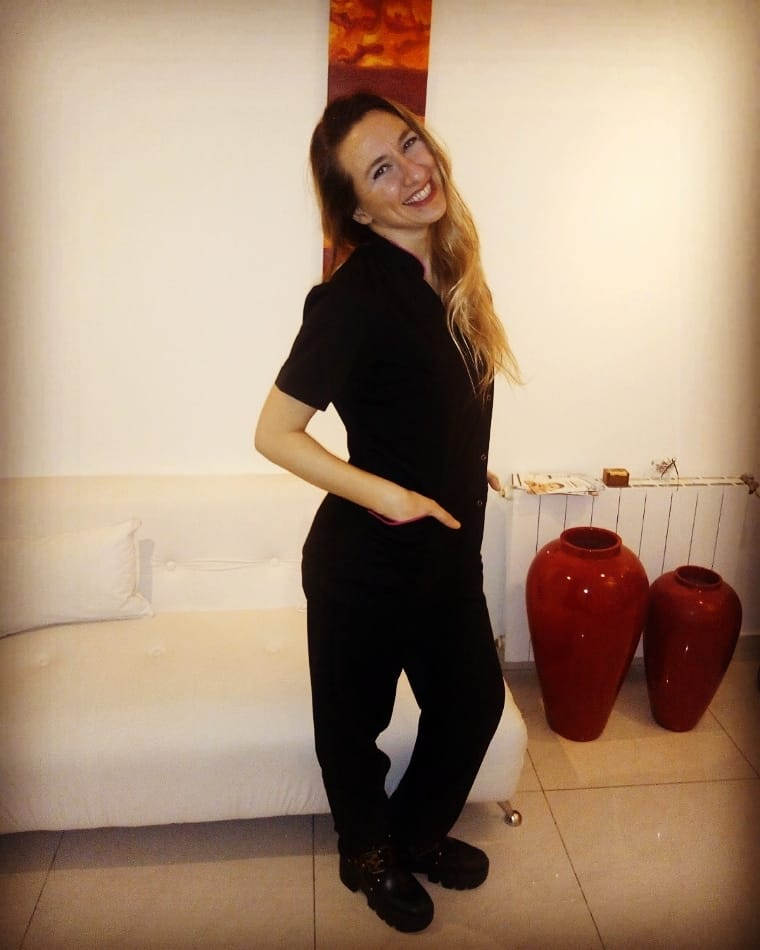

He reflexionado mucho cuando me han pedido para armar esta presentación que cuente algo sobre mí , o que cuente quien soy y la verdad no quiero aferrarme a ninguno de mis roles : cosmetóloga, cosmiatra, esteticista, masajista, terapeuta holistica, porque si me aferrara o me identificaría con alguno de esos roles estaría delimitandome en otros potenciales tambien y poniendo limite a otras formaciones venideras.
Obviamente soy cosmetologa, cosmiatra, esteticista, masajista , terapeuta holística certificada pero eso no define quien soy , tambien escribo, acompaño, asisto , doy talleres, ritos , charlas y mas. Lo que soy es un misterio del que descubro nuevas pistas cada día.
Cada personaje de mi historia la vivo plenamente dando lo mejor de mí pero es solo una percepción de lo que soy en realidad ,porque considero que sigo permanentemente en formación.
Mi verdadera naturaleza es la que voy descubriendo día a día, me gusta pensarme como un misterio, incluso para mí misma .
Más que preguntarme ¿quien soy? quiero cuestionarme ¿que soy? Así tendré la oportunidad de descubrirme acerca de mi potencial, reinvertarme permanentemente, y transitar mi experiencia de vida como un viaje micho mas enriquecedor para mí y para los que me rodean ,como un gran catalizador de cambios personales y mi entorno, con la consciencia, amor , empatía y compromiso sintiéndome parte del "todo” y permeable también en que ese "todo” me moldee , dándome la oportunidad de seguir descubriéndome y desarrollándome.
Lu Alonso
.jpeg)